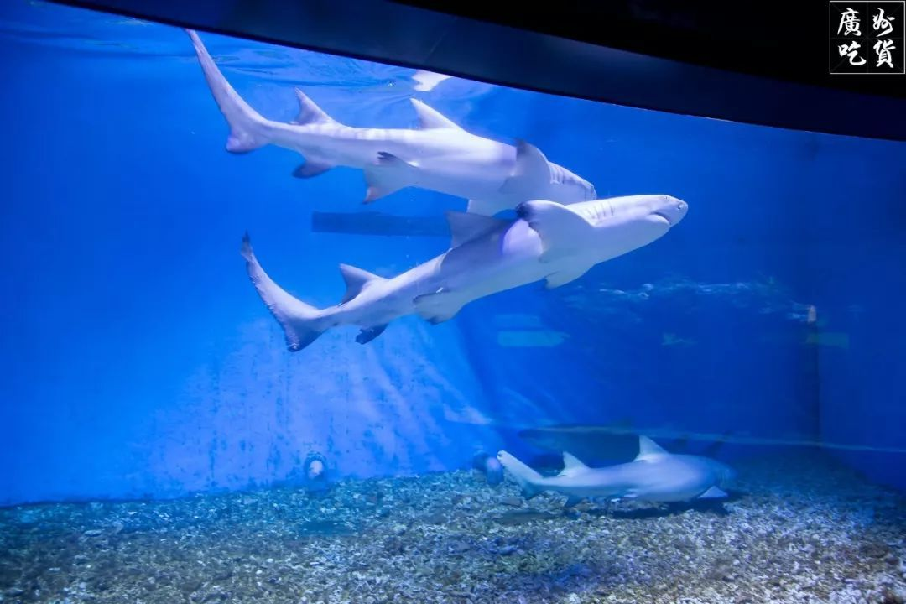

中国の海洋環境の現状と保護対策--国家海洋局
概要：本発表では、中国の海洋地域の自然条件、海洋環境保護に関する国の規制、政策、計画、近年の作業の発展について説明する。 中国の海洋環境は、汚染の増加、災害の頻発、生態系の破壊など様々な問題に直面していることを指摘し、その原因を分析している。 その上で、マクロ政策の強化、陸上汚染のコントロール、重点海域の実施、海洋生態監視と赤潮監視の強化、海洋環境監視能力の向上、海洋生態保護と建設の推進など、今後一定期間における海洋環境保護の全体目標、主要政策、具体的な対策を提案している。 
Abstract: The speech made a brief introduction of the basic nature condition of Chinese seas and summarized the national laws, regulations, policies, plans and recent achievements of marine environmental protection in China. The speech pointed out that land-source pollution, nature disasters and ecological degradation etc. were the major challenges of marine environment, and analyzed some causes of marine environment issues. On the base of analysis, a series of master goals, main policies of marine environment protection were raised, some measures for marine environment improvement including enhancing macro management, controlling land-source pollution, implement key sea areas restoration, taking precaution against red tidal, improve marine environmental monitoring capacity and promoting marine ecological and biodiversity conservation also were formulated.

中国の海洋環境の基本条件、中国の海域の自然条件、海洋環境保護における国家規制、政策、計画、中国の海洋環境保護業務の発展について紹介する。 中国の海洋環境の課題と原因、中国の海洋環境が直面している課題、近海の環境汚染は依然として深刻であり、陸上の汚水源は近海を深刻に汚染し、海水養殖区の環境は楽観的ではなく、海洋赤潮災害の頻繁な発生、脆弱な近海海洋生態系、深刻な沿岸浸食災害。 中国の海洋環境問題の原因：沿岸地域の急速な経済発展は巨大な環境圧力を発生させ、海洋環境保護のためのマクロ計画や規制・基準の欠如、海洋環境保護のための資金と技術の不足、監督管理メカニズムの未完成。 今後の海洋環境保護の主な政策：科学的発展観の指導の下で、海洋経済発展と環境保護のマクロ政策を策定し、陸地から海への汚染物質の排出を抑制し、重点海洋区域の環境保護計画を策定・実施し、海洋生態監視区と赤潮の監視を強化し、海洋環境監視と能力開発を強化し、海洋生態保護を強化する。 この青い大地を守るために力を合わせましょう！